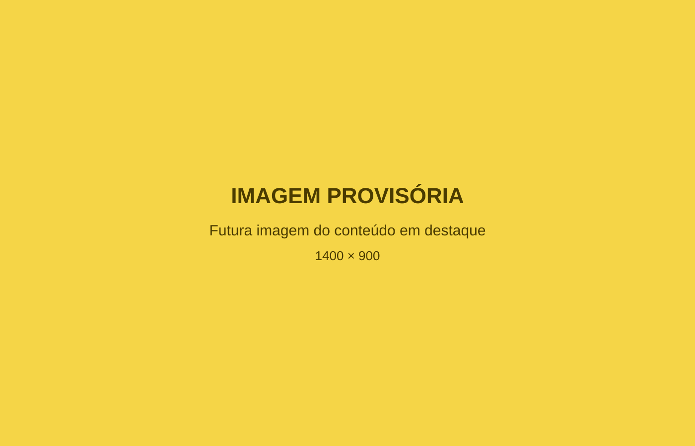
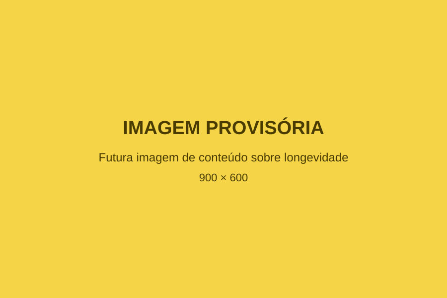

Longevidade
Longevidade é mais do que viver muitos anos.
Cuidar da longevidade significa considerar saúde, autonomia, movimento, relações, hábitos e qualidade de vida ao longo do tempo.
Conteúdos
Conteúdos sobre saúde, alimentação, movimento, hábitos e longevidade apresentados de forma clara e responsável.
Compreender melhor cada escolha também faz parte da construção de uma vida mais saudável e consciente.
Informações confiáveis podem ajudar cada pessoa a compreender melhor sua saúde, conversar com profissionais e tomar decisões mais conscientes no dia a dia.
Este espaço será dedicado a conteúdos educativos relacionados aos diferentes pilares que influenciam saúde e qualidade de vida.
Reflexões sobre saúde, autonomia e qualidade de vida ao longo dos anos.
Informações para compreender a relação entre escolhas alimentares, rotina e bem-estar.
Conteúdos sobre atividade física, força, mobilidade e autonomia.
Estratégias para construir mudanças possíveis e sustentáveis no cotidiano.
Informações educativas para incentivar atenção responsável à saúde.

Longevidade
Cuidar da longevidade significa considerar saúde, autonomia, movimento, relações, hábitos e qualidade de vida ao longo do tempo.
Movimento
Como o movimento pode fazer parte de uma rotina voltada à independência e à qualidade de vida.

Hábitos
Por que consistência e realidade precisam caminhar juntas na construção de novos hábitos.
Alimentação
Uma reflexão sobre escolhas alimentares que respeitam necessidades, rotina e individualidade.
Bem-estar
Saúde envolve aspectos físicos, mentais e sociais que se relacionam ao longo do tempo.
Acompanhamento
Registros e acompanhamento podem ajudar a compreender o caminho percorrido e orientar conversas mais claras.
Prevenção
A importância de manter atenção responsável à saúde durante as diferentes fases da vida.
Os conteúdos deste site possuem finalidade educativa e não substituem consulta, diagnóstico, avaliação ou orientação profissional individualizada.
Em caso de dúvidas sobre sua saúde, procure um profissional habilitado. Em situações de urgência ou emergência, procure os serviços de saúde adequados da sua região.
Acompanhe a Dra. Deyvla para receber novos conteúdos e informações sobre saúde e longevidade.
Entre em contacto para receber informações sobre a proposta de acompanhamento da Dra. Deyvla.
Agendar avaliação pelo WhatsApp